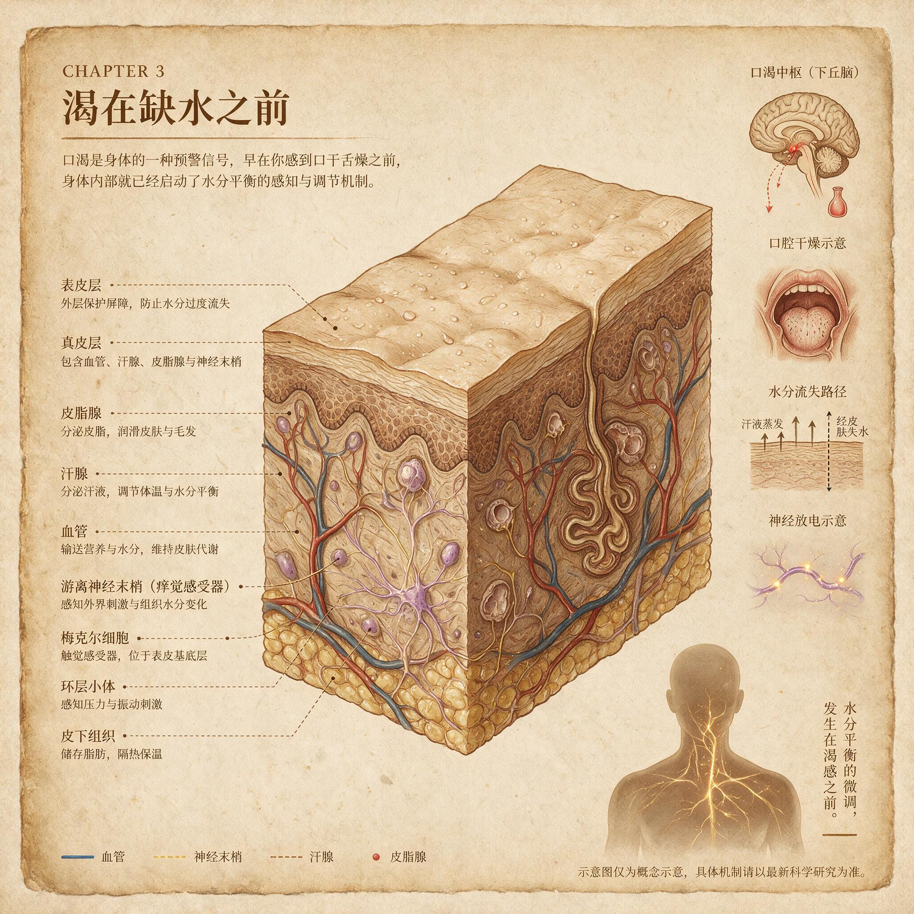

第 8 章
渴在缺水之前
球场边，他抓起水瓶的瞬间，我注意到了一个奇怪的现象。那是七月末的上海，一场业余篮球赛刚打完第三节。我朋友仰头灌水的动作急促而猛烈，喉结上下滚动，水从嘴角溢出，顺着下巴滴落。第一口吞

皮肤组织结构与痒觉神经末梢示意图
AI 生成插图，非史实影像。
咽完成时，他长出一口气，放下水瓶，脸上露出满足的神情——整套动作从开始到结束不过五秒钟。五秒钟，水还在他的食管里，连胃都没到，但他已经不渴了。
我问他：“你怎么知道喝够了？”
他愣了一下：“就不渴了啊。”
“但水还没进血液。”
他又愣了一下，看着我，好像我在问为什么一加一等于二。这种理所当然的感觉，正是身体密令系统最精妙之处：它让你察觉不到它正在做的复杂运算。渴不是缺水传感器，渴是一个预测模型。这个论断如果成立，它将改变你对身体所有不适信号的理解。
让我们拆开这个五秒钟的过程。水灌进口腔，舌面、上颚、颊黏膜上的湿润感受器立刻被激活。这些感受器对渗透压变化和机械刺激都敏感——液体接触黏膜表面，细胞外的钠浓度瞬间稀释，感受器发放冲动的频率随之改变。几乎在同一时刻，吞咽动作开始。咽部肌肉的收缩序列被脑干的吞咽中枢精确编排，每一次吞咽都像一份签过名的报告，通过舌咽神经和迷走神经上传至大脑。口腔湿润了，吞咽发生了，两个前置信号在不到一秒内抵达渴感中枢。
渴感中枢位于下丘脑，具体说是室周器和终板血管器。这些结构的名字不重要，重要的是它们能直接接触血液和脑脊液，实时监测渗透压变化。当血液变浓——哪怕只升高百分之一——这里的神经元就会皱缩，触发动作电位，产生渴的感觉。这是经典解释，教科书上写了半个多世纪。
但这套解释漏掉了更关键的部分：下丘脑不是只盯着血液渗透压。它同时接收来自口腔、咽喉、胃壁、小肠的神经信号，综合这些前置线索做出预判，在血液渗透压真正变化之前就发出或解除渴感。证据来自一个简单到不可思议的实验：让受试者喝水，同时测量血浆渗透压和渴感评分。渴感在吞咽后几十秒内急剧下降，而血浆渗透压要到十到十五分钟后才出现可检测的变化。
如果渴只是渗透压的被动反映，这个时间差就无法解释。大脑不是等到血液变稀才解除警报，它根据口腔和咽喉的报告提前判断：水源已找到，摄入正在进行，按历史经验推算，体内水分很快会恢复正常。于是它关闭了渴的信号。这是预测，不是反应。
这个预测模型还有更多输入端口。胃壁的牵张感受器报告液体容量，小肠黏膜的渗透压感受器报告刚进入肠腔的水分浓度，血液中的血管紧张素II水平被室周器实时捕捉。这些信号综合在一起，构成了一套多层次的预测系统。大脑不断更新它对体内水分状态的估计，在估计值低于安全阈值时发出渴感，在估计值回升时解除警报。整个过程比任何人类工程师设计的反馈控制系统都要精妙，因为它不是在控制一个变量，而是在预测一个趋势。
进化为什么选择预测而非简单反应？答案藏在更新世的稀树草原上。想象一个两百多万年前的下午。
你的祖先——一个能人女性——在旱季的草原上挖掘块茎。太阳已过中天，她连续劳动了四个小时，汗液不断蒸发带走热量，体内水分在缓慢但持续地流失。如果她的大脑要等到血液渗透压显著升高才发出渴的信号，那就太晚了。脱水一旦开始，在没有水源的环境中可能迅速恶化。当血液渗透压升高百分之二时，认知功能开始受损——注意力涣散，判断力下降，短期记忆出错。
升高百分之四时，肌肉力量明显减弱，运动协调性变差。升高百分之六时，可能出现意识模糊和幻觉。在稀树草原上，这些症状等于死刑判决：你没法在认知受损的状态下躲避剑齿虎，也没法在肌肉无力的状态下追上受伤的羚羊。
更致命的是时间窗口。更新世的水源分布极度不均。雨季时溪流和泉水随处可见，旱季时可能需要步行半天甚至一整天才能找到下一个水坑。如果等到脱水发生才感到渴，你可能已经离最近的水源有三小时路程，而你已经处于认知和体能下降的状态。三小时对脱水初期的身体来说太长了。
预测性口渴解决了这个问题。当口腔开始发干——哪怕血液渗透压还没明显变化——渴感就启动了，驱动你寻找水源。口腔干燥作为前置信号的优势在于：唾液分泌对交感神经活动敏感，而交感神经在轻微应激时就激活。体温升高、体力消耗、甚至日光直射都能通过交感通路减少唾液分泌，让口腔变干。这意味着口腔干燥往往出现在真正脱水之前的几十分钟到几小时，恰好给了你寻找水源的时间余量。
当你终于找到一条干涸河床上的小水洼时，你蹲下来喝水。水一进口，口腔湿润度恢复，吞咽动作连续发生，大脑立即下调渴感。你不需要等到水分完全吸收才停止喝水，因为那样的话你会喝得过多——等血液渗透压恢复正常时，胃里可能已经灌进了远超需要的水量。过量饮水不仅浪费宝贵的能量去处理多余水分，还可能稀释血液中的电解质，导致低钠血症。在更新世，低钠血症可能和脱水一样危险。
预测性口渴是一套精确校准的提前量控制系统。提前预警让你在缺水之前开始找水，提前解除让你在补水过头之前停止饮水。这套系统的校准参数来自几百万年的经验：口腔干燥到真正脱水的时间差是多少，吞咽到血液渗透压恢复的时间差是多少，一次饮水通常能补充多少水分。这些规律被固化在神经回路里，成为了身体密令的一部分。
但现代环境彻底改变了这套系统的运行条件。你今天早上起床后喝的那杯水，不是因为你渴了，而是因为你习惯早起喝杯水。你办公桌上随时放着水杯，厨房水龙头一拧就有干净的水，便利店货架上摆满各种瓶装饮料。你不需要等到渴了才喝水。事实上，很多健康指南明确建议定时喝水，不要等渴了再喝。这句话本身包含着对古老预测系统的公开不信任——我们不再让它自主判断何时需要水，而是用认知层面的规则去覆盖它。
这听起来没什么问题，但预测模型需要反馈来校准。当你的祖先在口渴时喝水，口腔湿润和吞咽动作总是可靠地预示着水分即将进入血液，因为这些信号和真正的补水之间只隔着十到二十分钟的消化吸收过程。但如果你喝的是含糖饮料呢？一罐可乐滑过喉咙时，口腔湿润了，吞咽动作发生了，大脑收到“水来了”的信号，开始下调渴感。
但随后进入肠道的是高浓度糖溶液。肠道为了稀释这些糖分，反而要从血液中抽调水分进入肠腔，这会导致血液渗透压短暂升高，也就是你实际上变得更缺水了。大脑的预测模型被打了个措手不及：它根据前置信号判断水分充足，结果收到的后置信号却说水分在流失。这种信号冲突如果频繁发生，预测模型的准确性就会下降。
更隐蔽的错配来自另一个方向：固定饮水习惯本身。你的祖先并不是每天定时喝八杯水。他们有时一天喝很多，有时可能一整天都喝不到什么水。预测性口渴系统就是为这种波动性设计的，它根据实际的水分摄入历史和当前的口腔、肠道信号动态调整渴感阈值。但当你每天定时定量饮水时，这套系统接收到的训练数据变了：它学到的是水分总是充足的，不需要提前预警。久而久之，预测模型可能调低了敏感度，使得真实的缺水信号被忽视。
这不是说定时喝水有害健康。对于久坐办公室、容易忘记喝水的人来说，定时提醒确实能防止轻度脱水导致的头痛和疲劳。
但我们需要意识到，我们正在用前额叶皮层的理性决策替代脑干和下丘脑的古老预测系统。两套控制系统并行运转，有时互相配合，有时互相干扰。当你的理性大脑说该喝水了，而你的古老预测系统说不渴时，听谁的？大多数人选择听理性的，于是端起杯子又喝了一杯。偶尔为之没问题。
但如果长期用认知规则覆盖预测信号，就可能让这套精密的预测模型逐渐钝化——不是基因层面的退化，而是功能层面的。就像你不再相信自己的饥饿感、每餐都按卡路里计算进食一样，你也可能不再相信自己的渴感，转而依赖手机App的喝水提醒。
还有一种更微妙的错配：焦虑与口干。你上台演讲前，手心出汗，心跳加速，嘴巴发干。这是交感神经系统激活的经典表现——压力反应让唾液分泌减少，口腔黏膜水分蒸发加快。你的大脑收到口腔干燥的信号，按照古老的预测模型解读：缺水了，需要喝水。于是你感到渴，端起杯子喝水。但实际上你的血液渗透压完全正常，体内水分充足，你只是嘴巴干而已。
这个误判在更新世很少发生。那时候的压力反应——比如突然撞见一头剑齿虎——通常伴随着剧烈的肌肉运动，确实会出汗失水，所以压力导致的口干和真实的缺水往往同时出现。预测模型把口腔干燥作为缺水的前置信号，在当时是合理的。
但在现代，你坐在会议室里被老板质问时，身体启动了同样的压力反应，却没有伴随任何水分流失。口干是假的缺水信号，但预测模型照单全收，让你产生了假的渴感。
慢性焦虑症患者常常报告持续的口渴感，即使大量饮水也无法缓解。这背后的机制正是预测模型的系统性误判：持续的交感神经激活导致持续的口腔干燥，大脑持续收到缺水的前置信号，持续发出渴的指令。
患者喝进去的水已经远超需要，但口腔干燥没有改善——因为问题不在缺水，而在唾液腺被压力激素抑制了分泌。这是一个典型的错配：古老的预测信号在现代环境中被非缺水因素触发，导致了一个无法通过补水解决的口渴。
我们再来看看另一个极端：老年人的渴感减退。随着年龄增长，很多人对口渴的感知变得迟钝。这不是因为他们不需要水，而是因为预测模型的敏感度下降了。口腔干燥感受器的密度和灵敏度随年龄递减，肠道渗透压感受器的反应也变慢，脑内室周器官对血液渗透压变化的探测阈值升高。结果就是：老年人可能在已经轻度脱水的情况下仍然不觉得渴。
从进化角度看，这个现象其实很合理。预测性口渴是为繁殖年龄段的个体优化的——自然选择对活到生育年龄并成功繁殖的个体起作用，对于绝经后的个体，选择压力大大减弱。一个三十五岁的更新世猎人如果因为渴感迟钝而脱水死亡，他的基因传递会受影响；一个七十岁的老者如果同样脱水死亡，对种群的基因库影响要小得多。所以演化从来没有优化过老年人的渴感系统——它根本不在选择压力的雷达屏幕上。
但现代社会中，大量老年人活到了七八十岁甚至更长。他们的身体密令系统仍然按照更新世的参数运行，那些参数假设使用者会在生育年龄结束后不久死亡。渴感迟钝在远古不是大问题，在现代却可能导致老年人慢性脱水，进而引发尿路感染、便秘、肾功能下降、认知障碍等一系列连锁反应。这是另一种错配：不是环境变了，而是我们活得太久了，久到身体密令系统的保质期已经过了。
现在我们可以把口渴的预测模型放到更大的图景中理解。回顾前几章拆解过的信号——疼痛、发烧、疲劳、恶心、瘙痒——它们都有一个共同特征：身体不是在报告当下的事实，而是在执行一套进化塑造的算法。这套算法接收各种感觉输入，根据历史经验和当前情境做出判断，然后输出一个指令——让你感到痛、让你发热、让你疲劳、让你恶心、让你痒、让你渴。这些指令的目的不是精确描述身体状态，而是驱动你采取某种行动。
疼痛让你停止使用受伤的部位，发烧让你躺下保存能量对抗感染，疲劳让你避免耗尽储备，恶心让你清空可能含有毒素的胃内容物，瘙痒让你抓挠以去除皮肤上的寄生虫，口渴让你寻找并摄入水分。每一个指令都是行动导向的，而不是真相导向的。
预测性口渴把这一点展现得最清晰，因为它的时间差最明显。你喝水后几秒就解渴，这是明明白白的“错误”——你的血液渗透压还没变，身体却告诉你问题已经解决了。这不是错误，这是特征。身体密令系统不追求精确报告当下状态，它追求的是在正确的时间窗口内驱动正确的行为。提前预警和提前解除，都是为了让行为的时序与环境的节律匹配。
理解这一点，就能理解为什么现代慢性病中那么多症状是虚假信号。当你的免疫系统因为慢性低度炎症而持续释放细胞因子，这些细胞因子作用于大脑的疲劳中枢，让你感到疲惫不堪——这不是你能量耗尽了，而是预测模型被炎症信号误导了。当你暴露在尘螨过敏原中，肥大细胞释放组胺，瘙痒神经末梢被激活——这不是你皮肤上有寄生虫，而是预测模型被无害蛋白质触发了。当你坐在会议室里口干舌燥——这不是你缺水了，而是压力反应劫持了口腔湿润度这个前置信号。
这些虚假信号之所以难以消除，正是因为它们来自同一套预测系统。这套系统被进化设计成宁可误报不可漏报——漏报一次缺水的代价可能是死亡，误报一次口渴的代价只是多喝几口水。在更新世，这个权衡是完全合理的。但在现代，误报的代价变高了：它不再只是多喝几口水，而是可能发展成慢性焦虑、过度饮水导致的电解质紊乱、或者因为忽视真实信号而累积的健康损害。
我们还需要面对一个更深层的问题：预测模型是可以被训练的。你的祖先在稀树草原上学习到的规律是：口腔干燥意味着需要找水，找到水源后猛喝一通意味着接下来一段时间不用再担心水。这套规律通过无数次生死攸关的经验被固化在神经回路里，成为了本能的一部分。
但你呢？你学到的是：办公桌上的水杯空了就该去接满，手机提醒响了就该喝水，运动饮料广告说渴了再喝就晚了，所以你要提前喝。你的预测模型正在被这些新的规律重新训练。
问题在于，这些新规律并不总是与身体的真实需求对齐。它们有时对齐——比如运动后确实需要补水——有时不对齐——比如因为无聊而习惯性端起杯子。
当新规律频繁与真实需求错位时，预测模型就开始偏离校准。它可能变得过度敏感，让你在不需要水时感到渴；也可能变得迟钝，让你在需要水时忽略信号。
人造甜味剂提供了一个特别生动的例子。当你喝下一瓶零度可乐时，舌头上的甜味受体被激活，向大脑发出糖来了的信号。大脑据此预测血糖即将升高，于是指令胰腺释放胰岛素——这就是所谓的头相胰岛素分泌，一种预测性调控。但随后肠道吸收的是阿斯巴甜或三氯蔗糖，这些分子虽然甜，却不能被代谢为葡萄糖。血糖没有升高，但胰岛素已经被释放了。结果是血糖可能短暂偏低，反而刺激食欲和渴感。
你喝了一整瓶零卡饮料，口腔湿润了，吞咽动作做了几十次，大脑却收到了一组互相矛盾的报告：甜味说有能量来了，肠道说没有能量，血液说血糖没变甚至偏低。预测模型在这团混乱中试图重新校准，但下一次你再喝甜饮料时，它还是会被甜味触发——因为甜味与能量之间的关联在更新世是百分之百可靠的，演化还没来得及把这个关联解除。
我们不知道人造甜味剂长期大量摄入会对渴感和代谢预测系统造成什么程度的紊乱。这方面的研究仍在进行中，结论尚不明确。但机制层面的推断是清晰的：如果频繁用虚假的前置信号触发真实的生理反应，预测模型的准确性迟早会受到影响。
身体密令系统不是一台简单的输入输出机器，它是一个会学习、会适应、也会被欺骗的系统。
ME/CFS——肌痛性脑脊髓炎/慢性疲劳综合征——提供了一个更极端的案例。这种疾病通常在明显的病毒性疾病之后开始，比如单核细胞增多症、H1N1流感感染或水痘带状疱疹病毒感染。患者经历持续数月的极度疲劳，休息无法缓解，轻微活动后症状加重。长期以来，医学界对ME/CFS的病因争论不休，但它是一种生物疾病，而不是精神或心理疾病。神经和免疫系统以及能量代谢问题可能是因素之一。在1980年代晚期和1990年代初期，人类疱疹病毒第四型（EB病毒）曾被认为是引起慢性疲劳综合征的病毒，但后来证实该病并非由单一因素引起。目前医界认为，慢性疲劳综合征可能是由病毒感染、免疫系统问题、神经系统问题等多重因子造成。
从预测模型的角度看，ME/CFS可能是身体密令系统在经历严重感染后出现了系统性校准错误。感染期间，免疫系统释放大量细胞因子，这些信号促使大脑启动疲劳指令——在感染急性期，这个指令是有适应意义的，它强迫身体休息，把能量留给免疫系统。但当感染清除后，某些患者的预测模型没有恢复正常阈值，仍然以感染期间的敏感度解读正常的生理信号。轻微的体力消耗被解读为能量即将耗尽的预警，日常的代谢波动被解读为需要卧床休息的紧急指令。
研究发现，单核细胞增多症、登革热或Q热后出现病毒后疲劳的危险因素包括：在疾病过程中卧床的时间更久、发病前的身体状况欠佳、将症状解释为身体疾病的表现、相信康复需要较长时间，以及感染前存在的痛苦和疲劳感。
这些因素中，有些可能通过影响预测模型的校准过程发挥作用。长时间卧床让身体习惯了极低的活动水平，预测模型据此调低了能量消耗的安全阈值。将症状归因于身体疾病——虽然这个归因本身是正确的——可能强化了大脑对疲劳信号的关注和放大。
同一篇综述发现，CD4和CD8免疫细胞激活以及肝脏炎症等生物因素是亚急性疲劳的预测因素，但不是慢性疲劳综合征的预测因素。系统评价还表明，疲劳严重程度作为慢性疲劳综合症预后的主要预测指标，而心理因素则未被证实与预后相关。
这意味着病毒感染后的初期疲劳确实有生物学基础——免疫系统还在清理战场，身体确实需要休息。但在某些人身上，这个急性期的合理指令没有按时解除，而是固化为慢性模式。预测模型在应该恢复常规敏感度的时候，卡在了战时状态。
我们不知道为什么会这样。遗传因素和环境因素可能都有影响，但遗传成分不太可能是单一基因。病毒感染可能触发了某些易感个体神经免疫回路的持久改变。
但不管具体机制是什么，ME/CFS清楚地展示了预测模型失控的后果：当身体密令持续发出错误的疲劳指令时，患者的生活被彻底改变——不是因为他们懒散或意志薄弱，而是因为他们的预测系统在用感染急性期的参数运行，把日常生活的每一个动作都解读为需要紧急保存能量的威胁。
ME/CFS是预测模型错配谱系中最极端的一端。在另一端，是那些因为焦虑而频繁感到口渴、因为压力而持续疲劳、因为人造甜味剂而代谢紊乱的普通人。他们的预测模型还没有崩溃，但已经在频繁的虚假信号中变得不那么可靠。从偶尔的误报到系统的失准，这是一个连续谱。
那么，我们能做什么？这不是一本给出诊疗建议的书，所以这里不会有每天应该喝多少水的公式。但我们可以确立一个原则：尊重预测模型的存在，理解它的运作逻辑，然后在现代环境中尽量为它提供准确的反馈信号。
当你感到渴时，喝水——这是最直接的尊重。当你喝水后几秒就解渴时，不要怀疑这个感觉是假的——它是真的，只是它的真指的不是当下的血液渗透压，而是大脑基于前置信号做出的合理预测。
当你不渴却因为习惯或提醒而喝水时，至少意识到你正在用认知系统覆盖预测系统——有时候这有必要，有时候没必要，但永远不要让它成为不经思考的默认设置。
当你因为紧张焦虑而口干舌燥时，知道那不是真的渴。喝一口水润润喉咙没问题，但不要指望喝更多水能解决焦虑——问题出在交感神经系统，不是水平衡。
当你发现家里的老人不怎么喝水时，别只怪他们不爱喝水——他们的预测系统可能已经钝化了，需要外部提醒来补充这套古老机制的不足。
最重要的是，理解身体密令的预测本质之后，你会对许多慢性症状有一个新的认识框架。那些挥之不去的疲劳、莫名其妙的瘙痒、查不出原因的疼痛、无法解释的口渴——它们可能不是器官出了故障，而是预测模型在接收到异常输入后输出了错误的指令。这些指令本身是合理的，甚至是聪明的，只是在现代环境中被错误触发了。就像烟雾报警器对着烤面包的焦香尖叫一样，它没有坏，它只是在做它被设计要做的事——探测烟雾颗粒——只不过厨房里的烟雾不代表房子着火。
渴在缺水之前，解渴在水到之后——这个时间差里藏着身体密令系统最核心的秘密。身体不是在感知当下，它是在预测未来。它的预测有时准得惊人，有时错得离谱。准的时候我们浑然不觉，错的时候我们感到不适。
而现代生活的种种特征——随时可得的饮水、高糖高甜度的饮料、慢性压力导致的口干、寿命延长带来的系统老化——正在让这套预测模型面临前所未有的挑战。
我们不知道这套模型还能在多长时间内保持校准。我们不知道频繁的误报和虚假反馈会不会永久性地改变它的敏感度。我们不知道如何在不破坏其核心功能的前提下，用现代医学手段重新校准它。
这些不知道不是研究的失败，而是身体复杂性本身的体现——一个运行了两亿年的预测系统，其精妙程度远超我们目前的理解能力。
但有一件事是确定的：下一次你端起水杯一饮而尽、在三秒内感到解渴时，你正在体验的不是一个简单的反射，而是一套古老预测算法在瞬间完成的复杂运算。那三秒钟里，你的大脑整合了口腔触觉、咽喉运动觉、历史经验和对未来的预期，然后做出了一个决定：够了，不用再喝了。这个决定先于事实，却常常准确。这就是身体密令的运作方式。它不是事后诸葛亮，它是事前预言家。它的预言有时会落空，但在更新世的稀树草原上，它预言的准确率足以让我们的祖先一代代活下来，最终把这份预测能力传递到你我手中——连同它在现代环境中的所有错配与挣扎。
球场边，我的朋友放下水瓶，他不知道自己刚刚演示了一个进化奇迹。他的大脑在五秒钟内完成了对水分的预测、判断和指令解除，而这一切发生在他毫无察觉的情况下。身体密令最惊人的地方就在于此：它运行得如此顺畅，以至于你从来不知道它的存在——直到它开始出错。